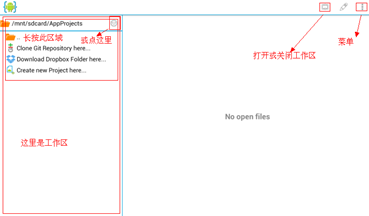
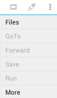
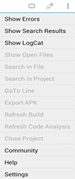

2.了解AIDE
由于AIDE暂无可用汉化版（目前最新汉化的仅可运行少部分程序），这里，我向大家介绍AIDE的使用和功能。推荐大家前期使用汉化版，对AIDE熟悉之后再用回原版，毕竟总是初期总是去翻译非常不方便。（本教程使用的AIDE版本为2.2.4）
进入主界面如下图：

如果第一次打开AIDE时提示新建一个android项目，可以点否。左边的区域是工作区，默认工作区弹出的内容是AIDE的项目文件管理器。值得一提的是AIDE的项目文件管理器的默认文件目录是在sd卡下的AppProjects目录下的，新建安卓项目最好新建在这个目录下。
工作区里的内容或者说功能可以通过手机菜单键>More(更多)进行切换，More的内容如下图：

下面是菜单的英文翻译对照：
主菜单Files-->文件夹
1、GoTo-->跳转
2、Forward-->前进
3、Save-->保存
4、Run-->运行
More-->更多
１、More(更多)
２、Show Errors-->显示错误
３、Show Search Results-->显示搜索结果
４、Show LogCat-->显示LogCatShow
５、File Location-->显示文件位置
６、Show Open Files-->显示打开的文件夹
７、Search in Files-->在文件中搜索
８、Search in Project-->在工程中搜索
９、GoTo Class-->跳转到类
１０、GoTo Line-->跳转到行
１１、Export APK-->导出APK
１２、Refresh Build-->刷新工程
１３、Refresh Code Analysis-->刷新代码分析
１４、Close Project-->关闭工程
１５、Community-->社区（跳转网页）SDK
１６、Help-->社区（跳转到android官方开发帮助）
１７、Settings-->设置Exit-->退出
大家在编写第一程序之前先好好的了解一下的我们的开发工具AIDE，前期用汉化版可以更快地熟悉。好了，这一节就到这里。
练习1.☆在汉化版里进入设置，了解里面的内容。